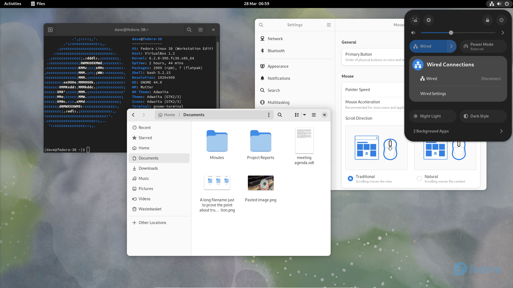
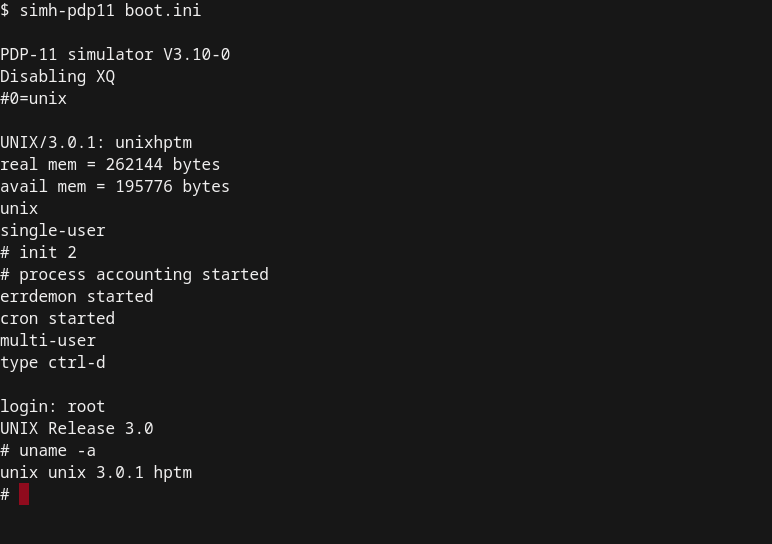

Storia di GNU/Linux
La storia di GNU/Linux inizia nel 1991, quando un giovane studente finlandese di nome Linus Torvalds decise di creare un nuovo sistema operativo come un hobby. Linus era appassionato di programmazione e desiderava sperimentare con il kernel, la parte centrale di un sistema operativo responsabile della gestione delle risorse del computer.
Linus decise di prendere ispirazione dal sistema operativo Unix, un potente sistema utilizzato nelle università e nelle aziende, ma che era costoso e non accessibile al pubblico generale. Ha cominciato a scrivere il kernel del suo nuovo sistema operativo come un progetto personale, e lo ha chiamato "Linux" combinando il suo nome con "Unix".
Nel frattempo, Richard Stallman, un noto programmatore e attivista per il software libero, stava lavorando sul progetto GNU. GNU era un sistema operativo completo basato sui principi del software libero, che permette agli utenti di utilizzare, studiare, modificare e distribuire il software liberamente. Tuttavia, mancava ancora un kernel per completare il sistema operativo GNU.
Linus decise di condividere il suo kernel Linux con la comunità open source, rilasciandolo sotto una licenza libera, la Licenza Pubblica Generale GNU (GPL). Questo permise ai programmatori di tutto il mondo di contribuire allo sviluppo del kernel Linux e di combinare il kernel con gli strumenti e le applicazioni GNU per creare un sistema operativo completo e funzionante.
Così, Linux e GNU si unirono, creando il sistema operativo GNU/Linux. Questo nuovo sistema operativo era basato su principi come la condivisione del codice sorgente, la collaborazione e la libertà degli utenti. Grazie a questi principi, GNU/Linux divenne rapidamente popolare tra gli appassionati di informatica e gli sviluppatori di software.
La comunità di sviluppatori open source ha continuato a lavorare sul sistema operativo GNU/Linux, contribuendo con nuove funzionalità, miglioramenti e correzioni di bug. Questo ha reso GNU/Linux un sistema operativo estremamente stabile, sicuro e affidabile, adatto per una vasta gamma di scopi, dalle server farm delle aziende alle workstation dei professionisti e ai dispositivi mobili.
Negli anni successivi, GNU/Linux ha guadagnato sempre più consensi, diventando una delle principali alternative ai sistemi operativi proprietari come Microsoft Windows e macOS. Molte aziende, organizzazioni e istituzioni hanno adottato GNU/Linux per i suoi vantaggi in termini di sicurezza, stabilità, personalizzazione e costo.
Oggi, GNU/Linux è presente in vari contesti, dall'uso quotidiano su computer desktop e laptop, all'esecuzione di server web e di database, fino all'impiego in dispositivi embedded, come router e dispositivi IoT. La comunità di sviluppatori e appassionati continua a lavorare per migliorare e far crescere il sistema operativo GNU/Linux, mantenendo viva la filosofia del software libero e aprendo nuove possibilità per l'innovazione tecnologica.
Richard Stallman - il profeta del Software libero
Trisquel GNU/Linux - il sistema Pure free che usa Stallman

Linus Torvalds - la mente dietro Linux

Fedora Linux - il sistema che usa Linus
Linus Torvalds usa il suo sistema per inviare un'email

La mascot di Linux
Una vecchia versione di Linux su Floppy Disk
Yggdrasil 1993 - Il Primo sistema Linux Plug and Play

Ken Thompson e Dennis Ritchie - I creatori del sistema operativo UNIX

il sistema operativo UNIX